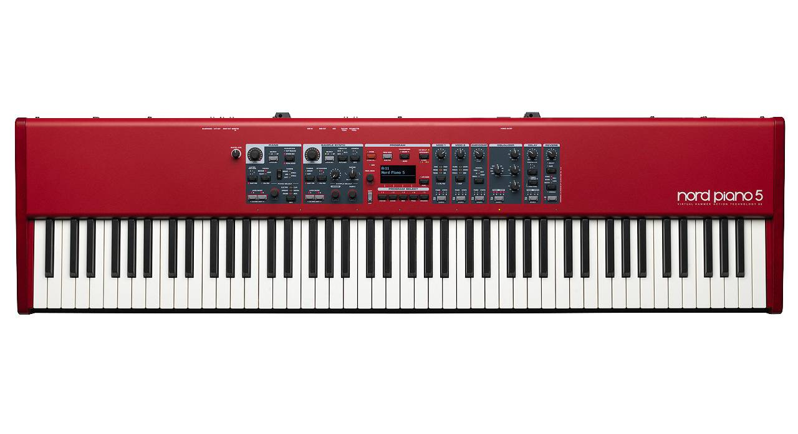
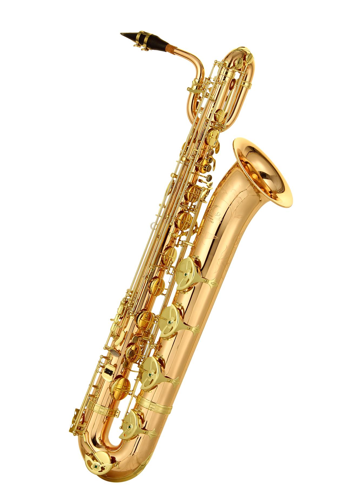
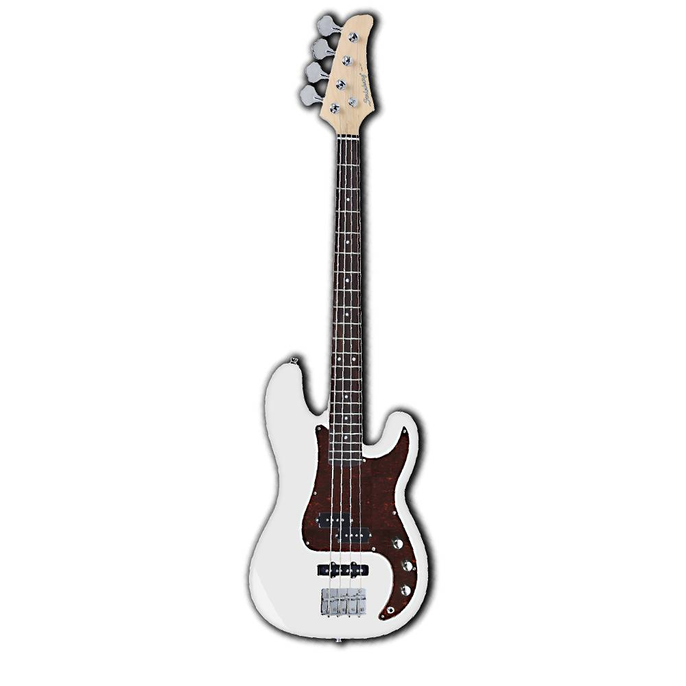
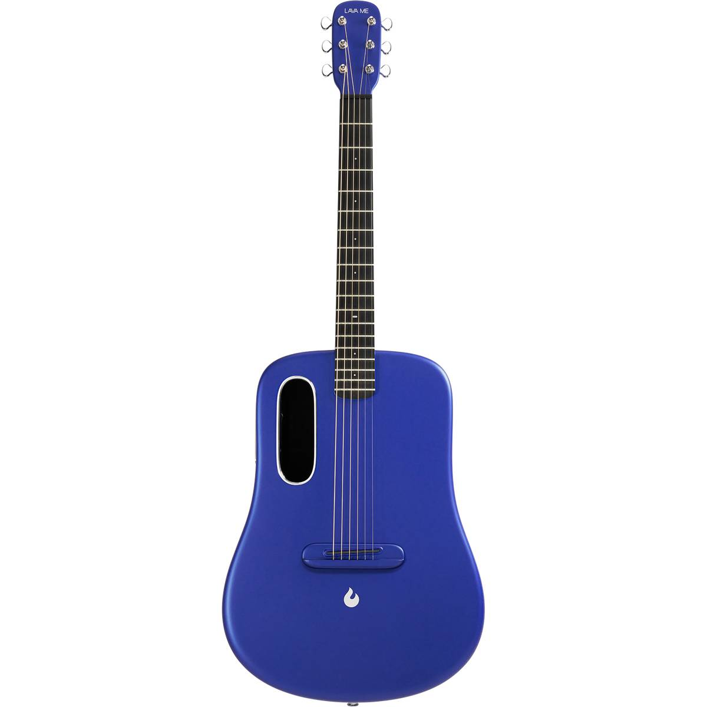

.png)
Instrumentos Musicais
A História e Evolução do Teclado: Do Cravo ao Sintetizador Digital
O teclado é hoje um dos instrumentos mais versáteis e populares do mundo da música. Presente em praticamente todos os gêneros musicais, ele percorreu um longo caminho até chegar ao formato moderno. Sua história é marcada pela evolução de tecnologias, estilos musicais e transformações culturais. Vamos fazer uma viagem no tempo e conhecer essa trajetória fascinante.
Tudo começou na Europa, por volta do século XIV, com instrumentos como o cravo e o clavicórdio. O cravo produzia som ao pinçar as cordas com pequenos ganchos, enquanto o clavicórdio usava martelos para pressionar as cordas. Ambos foram muito usados na música barroca, e compositores como Bach e Händel escreveram obras especialmente para esses instrumentos.
Apesar de sua beleza sonora, esses teclados antigos tinham limitações: não permitiam variações de intensidade (tocar forte ou fraco), o que inspirou a busca por um novo instrumento.
No século XVIII, o italiano Bartolomeo Cristofori inventou o pianoforte, o primeiro teclado que permitia variações de dinâmica –0 daí o nome, que significa "suave-forte" em italiano. Essa invenção revolucionou a música ocidental, e o piano rapidamente se tornou o principal instrumento de teclado.
Durante os séculos seguintes, o piano foi sendo aprimorado, ganhando estrutura de ferro, teclas mais resistentes e maior alcance de notas, chegando ao modelo moderno que conhecemos hoje.
Com o avanço da tecnologia no século XX, surgiram os primeiros órgãos eletrônicos, como o famoso Hammond, na década de 1930. Eles usavam circuitos elétricos para gerar sons e foram muito usados no jazz, blues e rock.
Na década de 1960, surgem os sintetizadores, como o Moog, que permitiam criar sons totalmente novos, sem depender da simulação de instrumentos acústicos. Com isso, o teclado passou a ter um papel central na música pop, disco e eletrônica.
Nos anos 1980, os teclados digitais começaram a ganhar força. Eles simulavam com fidelidade o som do piano acústico, mas com vantagens como portabilidade, controle de volume e conectividade com computadores (via MIDI).
Hoje, temos workstations, controladores MIDI, sintetizadores virtuais e teclados que cabem em aplicativos de celular. Os teclados modernos combinam sons acústicos e eletrônicos, ritmos automáticos, gravação, efeitos e até inteligência artificial para criar e tocar música.
A evolução do teclado reflete a própria evolução da música e da tecnologia. Do requinte clássico ao experimentalismo digital, o teclado continua sendo uma ponte entre tradição e inovação — e, acima de tudo, uma poderosa ferramenta de expressão artística.
A História e Evolução do Saxofone
O saxofone foi inventado em 1846 por Adolphe Sax, na Bélgica, com a proposta de criar um instrumento que combinasse o volume dos metais com a agilidade das madeiras. Seu uso inicial foi direcionado a bandas militares, por sua sonoridade forte e marcante.
Apesar de enfrentar resistência nas orquestras clássicas, o sax conquistou espaço aos poucos em obras de compositores como Debussy e Ravel. Mas foi no jazz, nos Estados Unidos, que o instrumento realmente brilhou, tornando-se essencial no estilo com músicos como Charlie Parker, John Coltrane e Stan Getz.
Durante o século XX, o saxofone expandiu-se para outros gêneros como rock, blues, soul, funk, pop e MPB. No Brasil, músicos como Leo Gandelman e Derico ajudaram a popularizar o instrumento.
Existem vários tipos de sax (soprano, alto, tenor, barítono), e ele evoluiu com melhorias técnicas e até versões digitais. Hoje, o saxofone é reconhecido por sua versatilidade, expressividade e presença em diversos estilos musicais, sendo símbolo de emoção e criatividade.
A História e Evolução da Guitarra: Das Cordas Antigas ao Rock Moderno

A guitarra é um dos instrumentos mais populares e influentes do mundo. Seja acústica ou elétrica, ela marcou gerações e transformou a música em todos os estilos, do clássico ao rock.
Instrumentos de corda existem desde a antiguidade, mas a guitarra começou a tomar forma na Idade Média com o alaúde e a vihuela. No século XIX, surge a guitarra clássica de seis cordas, como conhecemos hoje.
A guitarra clássica evoluiu no século XIX, com melhorias no volume e construção. No século XX, surgem as guitarras acústicas de aço, ideais para folk, blues e country.
Nos anos 1930, surgiram as primeiras guitarras elétricas. Na década de 1950, modelos como a Fender Stratocaster e a Gibson Les Paul revolucionaram o som e a performance do instrumento.
A guitarra elétrica se tornou símbolo do rock e da juventude rebelde. Artistas como Hendrix, Clapton e Slash marcaram época com solos e sons inconfundíveis.
No Brasil, a guitarra entrou pela Jovem Guarda e o tropicalismo. Hoje está presente em todos os estilos, da MPB ao sertanejo, passando pelo rock nacional e o samba rock.
A História e Evolução da Bateria

A bateria, essencial na música moderna, tem origem nos instrumentos de percussão antiga, usados por civilizações como africanas e asiáticas.
No final do século XIX, nos EUA, surgiu a bateria moderna, unindo bumbo, caixa e pratos para serem tocados por uma única pessoa. O pedal de bumbo, criado em 1909, foi um marco importante.
Nos anos 1920 a 1940, a bateria ganhou destaque no jazz e no swing, com bateristas como Gene Krupa e Buddy Rich. Com o rock and roll dos anos 50 e 60, ela virou protagonista, com nomes como Ringo Starr e John Bonham.
Na década de 1980, surgiram as baterias eletrônicas, que ampliaram as possibilidades criativas com sons digitais e integração com tecnologia MIDI. Hoje, muitos músicos utilizam kits híbridos, que combinam elementos acústicos e eletrônicos.
No Brasil, a bateria é essencial no samba, MPB, rock e outros gêneros. Bateristas como Milton Banana, Kiko Freitas e Igor Cavalera marcaram gerações com técnica e estilo.
Versátil, poderosa e sempre em evolução, a bateria continua sendo o coração do ritmo na música mundial.
A História e Evolução do Baixo
O baixo é um dos instrumentos mais discretos, mas também mais fundamentais da música. Ele conecta harmonia e ritmo, sustentando a base sonora de diversos estilos.
Antes do baixo elétrico, o contrabaixo acústico era usado para as linhas graves em orquestras e no jazz, desde o século XVII.
Em 1951, Leo Fender lançou o Fender Precision Bass, o primeiro baixo elétrico moderno. Compacto e versátil, substituiu rapidamente o contrabaixo em bandas populares.
Nos anos 60 e 70, o baixo brilhou em gêneros como funk, soul e rock progressivo. Baixistas como James Jamerson e Jaco Pastorius transformaram o instrumento com estilo e técnica.
No Brasil, o baixo é destaque em gêneros como samba, MPB e rock. Nomes como Liminha, Arthur Maia e Dadi Carvalho marcaram época com suingue e criatividade.
Hoje existem baixos com 4 a 6 cordas ou mais, ativos, passivos e digitais. Efeitos, plugins e pedais oferecem novas possibilidades sonoras ao baixista.
Com groove ou sutileza, o baixo é a base que sustenta a música. Indispensável e poderoso, é o elo entre ritmo e harmonia.
A História e Evolução do Violão
O violão é um dos instrumentos mais populares do mundo. Presente em diversos estilos, ele é expressivo tanto como acompanhamento quanto como instrumento solista.
O violão descende de instrumentos como o alaúde árabe e a viola medieval, evoluindo até o violão clássico espanhol no século XVIII.
No século XIX, Antonio Torres aperfeiçoou o violão, criando a base do modelo moderno. Surgiram também versões como o violão de aço e o eletroacústico.
No Brasil, o violão tem papel central em estilos como samba, bossa nova e MPB. Grandes nomes como João Gilberto e Yamandu Costa marcaram sua história.
Hoje existem violões de nylon, aço, 7 cordas, eletroacústicos e até digitais. Ele é usado em praticamente todos os gêneros musicais.
O violão continua sendo símbolo de emoção e musicalidade. Um instrumento acessível, profundo e encantador em qualquer época.